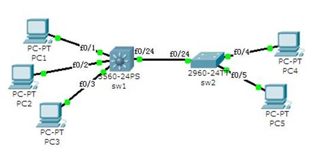

实训任务2-2：实现VLAN间通信(2)
PC1（192.168.10.11）、PC2（192.168.10.12）和PC4（192.168.10.14）属于VLAN10；PC3（192.168.20.13）和PC5（192.168.20.15）属于VLAN20。要求实现VLAN间主机的通信。

1．配置两台交换机的主机名分别为sw1和sw2。
交换机sw1
Switch(config)# hostname sw1
交换机sw2
Switch(config)# hostname sw2
2． 在sw1上创建VLAN10和VLAN20，将f0/1和f0/2规划到VLAN10，将f0/3规划到VLAN20。
交换机sw1
sw1(config)# vlan 10
sw1(config-vlan)# name test10
sw1(config)# vlan 20
sw1(config-vlan)# name test20
sw1(config)# interface f0/1
sw1(config-if)# switchport mode access
sw1(config-if)# switch access vlan 10
sw1(config)# interface f0/2
sw1(config-if)# switchport mod access
sw1(config-if)# switchport access vlan 10
sw1(config)# interface f0/3
sw1(config-if)# switchport mode access
sw1(config-if)# switchport access vlan 20
3．在sw2上创建VLAN10和VLAN20，将f0/4规划到VLAN10，将f0/5规划到VLAN20。
交换机sw2
Sw2(config)# vlan 10
Sw2(config-vlan)# name test10
Sw2(config)# vlan 20
Sw2(config-vlan)# name test20
Sw2(config)# interface f0/4
Sw2(config-if)# switchport mode access
Sw2(config-if)# switch access vlan 10
Sw2(config)# interface f0/5
Sw2(config-if)# switchport mod access
Sw2(config-if)# switchport access vlan 20
4．启用sw1的3层虚拟交换接口（虚拟交换接口VLAN10 IP地址：192.168.10.1；虚拟交换接口VLAN20 IP地址：192.168.20.1）。
交换机sw1
sw1(config)# interface vlan 10
sw1(config-if)# ip address 192.168.10.1 255.255.255.0
sw1(config-if)# no shutdown
sw1(config)# interface vlan 20
sw1(config-if)# ip address 192.168.20.1 255.255.255.0
sw1(config-if)# no shutdown
5．设置trunk链路，实现跨交换机的VLAN。
交换机sw1
sw1(config)# int f0/24
sw1(config-if)# switchport mode trunk
交换机sw2
sw2(config)# int f0/24
sw2(config-if)# switchport mode trunk
6．开启sw1的路由功能。
交换机sw1
sw1(config)# ip routing
7．测试PC间的连通性。
①配置PC机的IP地址和子网掩码
PC1的IP地址：192.168.10.11，子网掩码：255.255.255.0，网关：192.168.10.1；
PC2的IP地址：192.168.10.12，子网掩码：255.255.255.0，网关：192.168.10.1；
PC3的IP地址：192.168.20.13，子网掩码：255.255.255.0，网关：192.168.20.1；
PC4的IP地址：192.168.10.14，子网掩码：255.255.255.0，网关：192.168.10.1；
PC5的IP地址：192.168.20.15，子网掩码：255.255.255.0，网关：192.168.20.1；
②测试计算机的连通性
PC1
PC> ping 192.168.20.13
结论：PC1与PC3相互能ping通。
8．查看交换机的配置信息。
交换机sw1
sw1# show vlan
sw1# show running-config
交换机sw2
sw2# show vlan
sw2# show running-config